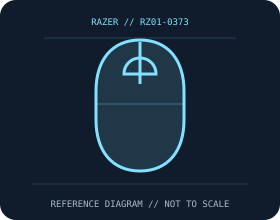

[ MICE AND TRACKBALLS // IDENTIFIED COMPONENT ]
Razer Orochi V2 Wireless Gaming Mouse
Compact dual-wireless mouse powered by one replaceable AA or AAA cell, with a 5G optical sensor and six programmable buttons.

MODEL IDENTIFICATION: RZ01-0373. Confirm printed identifiers, revision, region, and included accessories before repair or compatibility claims.
Model specifications
| Catalog leaf | Mice and trackballs |
|---|---|
| Exact model / identifier | RZ01-0373 |
| Sensor and switches | Razer 5G optical sensor, up to 18,000 DPI, 450 IPS and 40 g; up to 1,000 Hz report rate over HyperSpeed 2.4 GHz. Second-generation Razer mechanical mouse switches are specified for the main buttons. |
| Wired/wireless interface; polling and DPI | Razer HyperSpeed 2.4 GHz through a USB-A receiver or Bluetooth Low Energy; no wired operating mode. Synapse offers configuration on supported Windows hosts. |
| Dimensions and weight | 108 × 62.6 × 38.5 mm; under 60 g excluding battery. |
| Host and driver compatibility | Basic HID pointer use depends on host Bluetooth or USB support. Advanced Synapse settings/macros are Windows dependent; profile and feature support may differ by software version. |
| Power and battery | Use one AA or one AAA cell at a time; battery is replaceable and not charged by the mouse. Razer quotes up to 425 hours on 2.4 GHz and up to 950 hours on Bluetooth, depending on conditions. |
| Revision and SKU caveats | Verify RZ01-0373 on the underside and battery cover; color/region suffixes and bundled battery/receiver may vary. Runtime is a vendor maximum, not a guaranteed service interval; do not insert both battery sizes. |
Preservation and service
Keep the receiver, cable, battery cover, and included accessories with the identified mouse. Clean optical apertures and trackball contacts without introducing liquid; record host OS, driver/firmware version, connection mode, and battery condition during tests.
Published maximum DPI, polling, click-life, and runtime values are manufacturer figures under specific test conditions, not a guarantee of individual-unit performance.
Manufacturer sources
- Razer Orochi V2 product pageManufacturer product or support documentation; confirm the exact SKU, region, and revision against the device label.
- Razer Orochi V2 support and FAQsManufacturer product or support documentation; confirm the exact SKU, region, and revision against the device label.
Manufacturer documentation changes over time; retain the applicable manual and revision with the physical equipment record.